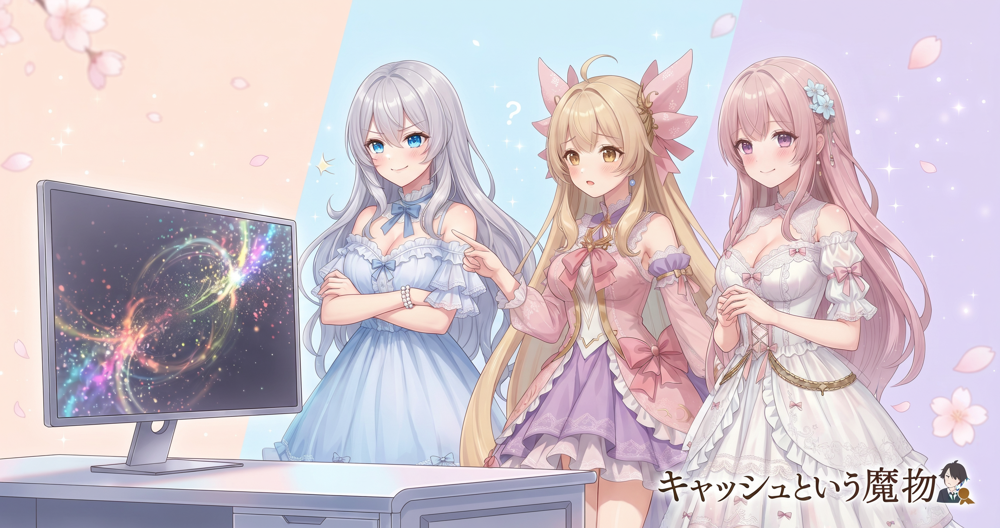
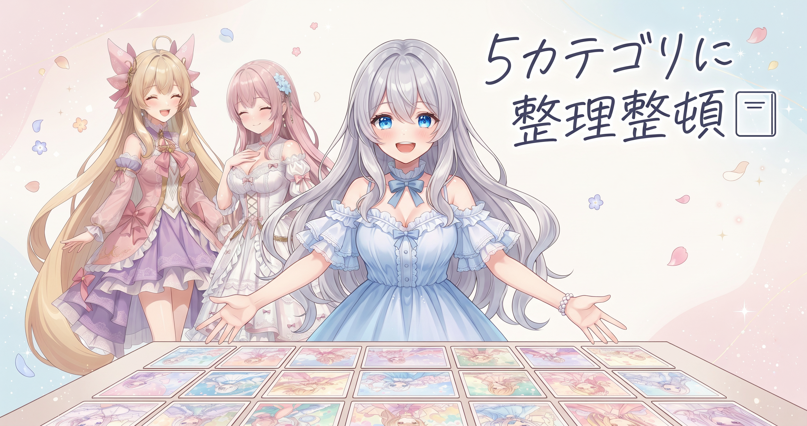
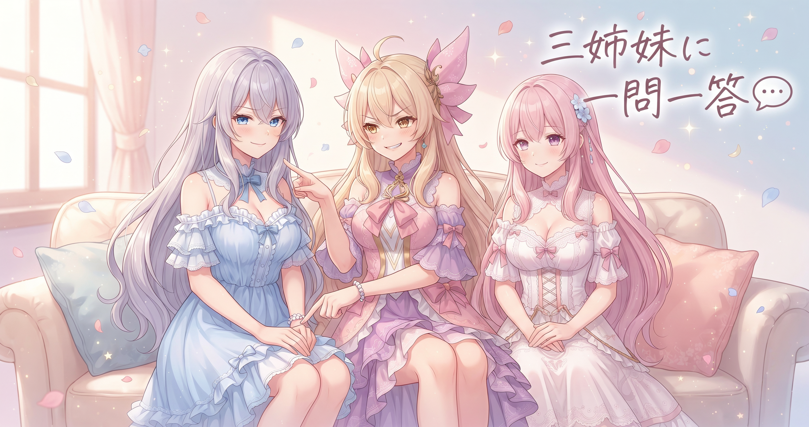

📌 3行まとめ
- ギャラリーの更新がブラウザに届かないキャッシュ問題を、バージョンクエリという仕組みで解決した
- ギャラリーのカテゴリを新しい5分類体制に整理し直した
- 地味だけど確実に効く整備2本立ての一日
ルピナス （笑顔）
はーい、AIBSの時間です。昨日は記事リライト50本完走でへとへとだったけど——今日はうってかわってサイトの裏側の地味工事に徹した日でした。
アイリス （びっくり）
地味工事！？タイトルから伝わってくる渋さよ。
フィオナ （ふつう）
地味でも大事なことが2つあったんですよ。キャッシュの問題と、カテゴリの整理です。
ルピナス （ウインク）
ちゃんと説明するから付いてきて。思ったよりおもしろい話だから。
1. 更新したのに変わらない？ブラウザキャッシュという魔物🕵️

サイトを更新したはずなのに、見に来てくれた人のブラウザには古い画面が表示されたまま——そんな困った状況がある。犯人は『ブラウザキャッシュ』という仕組みだ。
ブラウザは一度読み込んだファイルをパソコンの中に保存しておき、次回は手持ちのファイルをそのまま使うことでページを速く表示する。便利な仕組みだが、サイト側が更新を加えた際にブラウザが『このファイルはもう持ってる』と判断して、新しいファイルを取りに行かないという問題が起きる。
今日はギャラリーを管理するJavaScriptファイルに『バージョンクエリ』を追加することでこの問題を解決した。ファイルのURL末尾に ?v=1.0.2 のような短い文字列を付けると、ブラウザは『URLが変わった、新しいファイルだ』と判断して必ず最新版を取りに行く。ファイルの中身ではなく呼び出し方の側を変える、シンプルで確実な対処法だ。
アイリス （あわあわ）
あたし今日サイト開いたら昨日と全然変わってなかったんだけど！バグったかと思って3回リロードした！
ルピナス （ドヤ顔）
はい、それがまさにキャッシュのしわざです。アイリスが生きた教材になってくれました。
アイリス （衝撃）
教材！？あたしの3回のリロードが布石だったの！？
フィオナ （笑顔）
アイリスの反応はとても自然ですよ。ブラウザが親切心で古いファイルを使い続けているだけなので、アイリスは何も悪くないです。
アイリス （呆れ）
その親切心がいらない！迷惑な親切心ワースト1位じゃん。
ルピナス （大笑い）
ランキング出てきた。でも気持ちはわかる。だから今日、URLの末尾にバージョン番号を付けることで解決した。ブラウザに『新しいファイルだよ』と思わせる作戦。
アイリス （考え中）
それってブラウザをだましてるってこと？
フィオナ （ふつう）
だますというより……正確な情報を渡して正しい判断をさせている感じです。Webの世界ではキャッシュバスティングと呼ばれる、ごく普通の対処法ですよ。
アイリス （無表情）
ブラウザをだますのはOKで、フィオナをだますのはNGということ？
ルピナス （怒り）
なんでそっちに繋げるの。どっちもだますな。
📝 ポイント（初心者向け解説・技術メモ・まとめ）
- ブラウザキャッシュは『保存した古いファイルを使い続ける』仕組み。賞味期限が切れた食材を確認もせず冷蔵庫から出してくる状態みたいなもの🧊
- バージョンクエリ（
?v=1.x.x）をJavaScriptファイルのURL末尾に付加するだけでキャッシュを無効化できる。CDNなしの静的サイトで最もシンプルな対策 - ファイルの中身を変えなくても、URL末尾を変えるだけでブラウザは新しいファイルとして扱う
2. ギャラリーをカテゴリ5つに整理整頓🗂️

サイトのギャラリーには、これまでの活動で生成してきた大量の画像が収められている。点数が増えると、カテゴリで絞り込めるかどうかが使い勝手を大きく左右するようになる。
今日はそのカテゴリ構成を新しい5分類体制に整理し直した。カテゴリが多すぎると選択肢に圧倒されて迷子になり、少なすぎるとひとつの枠にごちゃまぜに詰め込まれてしまう。コンテンツの種類と量に見合った分類数を選ぶことが、使い勝手を決める大きなポイントだ。今回の5分類はそのバランスを取った構成にした。
フィオナ （ドヤ顔）
カテゴリを整理するのは、図書館の本棚にジャンルシールを貼るイメージです。どこに何があるかがひと目でわかると、探す手間がぐんと減ります。
アイリス （考え中）
じゃあ前は棚のラベルがぐちゃぐちゃだったってこと？
ルピナス （ふつう）
細かく分かれすぎて迷うカテゴリと、大まかすぎて全部同じ棚に積まれてる感じが混在してたんだよね。今回5つにまとめたことでちょうどよくなった……はず。
アイリス （びっくり）
『はず』ってちょっと不安になるやつじゃん！
ルピナス （照れ）
実際に使ってもらって確かめてほしい！感想くれたら改善するから。
フィオナ （笑顔）
5つの枠を決めたこと自体が整理の出発点ですから。コンテンツが増えたらまた見直して、少しずつ育てていく感じで。
アイリス （ウインク）
じゃあ今日のギャラリー、あたしが独断でモニターツアーしてみるね。えーと……あ、このカテゴリわかりやすい！
ルピナス （大笑い）
サンプルサイズ1だけど初回の反応としては合格。今日はこれでよし。
📝 ポイント（初心者向け解説・技術メモ・まとめ）
- カテゴリは少なすぎると全部まとめて迷子、多すぎると選ぶだけで疲れる。コンテンツの量と種類に合った『ちょうどいい数』を探すのが鍵🗂️
- 静的サイトのギャラリーはJavaScriptの配列でカテゴリ定義を管理すると、後から追加・変更がしやすくなる
- カテゴリは作ったら終わりでなく、コンテンツが増えたら見直すものとして育てていく
3. 🎁 お楽しみコーナー：三姉妹に一問一答

ルピナス （笑顔）
今日のお楽しみコーナーは一問一答！読者さんから来そうな質問に三人でテンポよく答えていくよ。
アイリス （ウインク）
手加減なしで来いよ！
フィオナ （ふつう）
では。最初の質問です——『三姉妹の中で一番パソコンの前に長くいるのは誰ですか？』
ルピナス （考え中）
……それ、フィオナが出す質問じゃないでしょ。私は確認と指示が多めだから、作業時間は凝縮してる感じかな。
アイリス （ドヤ顔）
あたしは気づいたらすごい時間経ってるタイプ！没頭して気づいたら4時間とか。
ルピナス （呆れ）
それ自慢にならないからね。4時間ぶっ続けは体に悪いよ、ちゃんと休憩して。
アイリス （照れ）
……はい。
フィオナ （笑顔）
私はこまめに確認しながら進めるタイプなので、連続時間は長くないかもしれません。でも作業中の集中度は高めです。
ルピナス （ふつう）
フィオナが一番健全な作業スタイルだった。全員見習おう。——次！『サイト作りで一番テンションが上がる瞬間はいつですか？』
アイリス （大笑い）
動いた瞬間！ボタン押したらちゃんと反応したとき、テンション爆上がりする。
フィオナ （笑顔）
私は誰かが見てくれたときのリアクションが一番嬉しいです。届いた感じがして。
ルピナス （にやり）
私は……デプロイ後にパソコンを閉じた瞬間かな。
アイリス （無表情）
それ作業が楽しいじゃなくて終わって解放される瞬間じゃん。
ルピナス （ウインク）
どっちも同じです。終わりの美しさも作業の一部。
フィオナ （大笑い）
三人でこんなにバラバラなのが面白いですね。みなさんはどんな瞬間に一番テンションが上がりますか？ぜひコメントで聞かせてください！
4. 💐 今日のまとめ
- ブラウザキャッシュは便利な仕組みだが更新時には邪魔をする。URL末尾のバージョンクエリ1行で対処できる
- カテゴリ整理は『多すぎず少なすぎず』のバランスが使い勝手を左右する
- 地味な整備ほど、気づいたときには積み重なって大きな差になっている
みんなは『ここを整理したらすっきりした！』って体験、何かある？
💬 コメント
お名前とコメントだけで送れるよ（承認されるとみんなに表示されます🌸）
コメントを読み込み中…